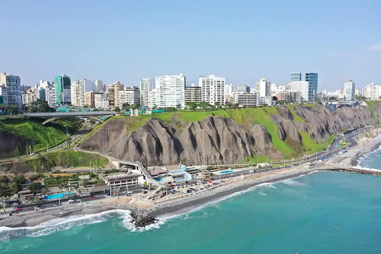

I'm fascinated by Lima, which envelops you with its humid climate due to its proximity to the Pacific Ocean. But the true magic of Lima lies in its people. They are incredibly homey, making you feel welcome. They are also incredibly resilient, never giving up and always finding a way forward, with admirable creativity in every corner, from their vibrant street art to their innovative offerings.
What makes Lima special is that we find two temples: the Temple of the Olives and the Temple of Lima-La Molina. I love those temples.
